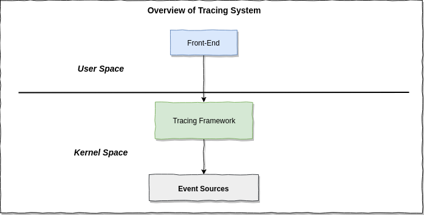
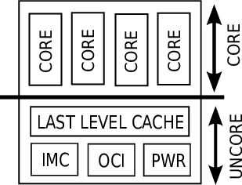

Linux tracing系统中有3层：front-end, tracing-framework(本文叫tracer)和event-source; 本文聚焦于perf，它属于tracer，类似的还有ftrace, eBPF等。
框架 (1)
先引用两张图说明一下ftrace在linux tracing中的位置与角色：

Tracing系统包含3层: event-source是数据来源，包括tracepoint, kprobe, usdt等；tracer (tracing framework) 运行于内核中，负责搜集event数据，甚至能够聚合与统计数据(例如eBPF)；front-end为用户提供交互接口，触发tracing，获取数据并进行聚合与统计(tracer不能做的话)。具体到perf，是这样的：

位于front-end层的是perf命令行工具以及实现它的perf_event_open() syscall (还有一些相关的ioctl())；tracing-framework的核心是perf_event；event-soure比较广泛，包括硬件event, 软件event, tracepoint；注意，图中tracepoint是广义的tracepoint，除了包括编译进内核的静态tracepoint，还包括kprobe和uprobe等动态tracepoint。虽然在本图中，它们都叫tracepoint，但下文可以看到，系统调用perf_event_open()的参数attr.type是不同的：静态tracepoint对应的是2(PERF_TYPE_TRACEPOINT)，kprobe对应的是6，uprobe对应的是7。
说明 (2)
Perf中有一些confusing的term，因为它是慢慢发展的，名词的意义随着演进可能发生了变化。我做了一些搜索，在本文中试图澄清它们，不正确的地方还望指正。
PMU (2.1)
PMU(Performance Monitoring Unit)就是CPU core上的Performance Monitoring Counter (PMC)的集合。PMC是物理register，包括Fixed-PMC和Programmable-PMC；Fixed-PMC用于计数特定的event，而Programmable-PMC通过编程(即给对应的control-register设置不同的值)可为不同的event计数，见引文[1]。可以查看每个core的PMU配置：
1 | # sudo yum install cpuid |
可见每个core有4个Programmable-PMC (number of counters per logical processor)和3个Fixed-PMC (number of fixed counters)；对于Intel CPU，3个Fixed-PMC通常是cycles, reference cycles, instructions retired.
补充：What is retired instruction?
Modern processors execute much more instructions that the program flow needs. This is called a speculative execution. Instructions that were “proven” as indeed needed by the program execution flow are “retired”. Instructions Retired event indicates the number of instructions that retired or executed completely. This does not include partially processed instructions executed due to branch mispredictions.
In the context “retired” means: the instruction (microoperation, μop) leaves the “Retirement Unit”. It means that, in Out-of-order CPU pipeline, the instruction is finally executed and its results are correct and visible in the architectural state as if they execute in-order. 1. In performance context this is the number you should check to compute how many instructions were really executed (with useful output). 2. If your context is energy saving, you may check how many instructions started their execution in Out-Of-Order pipeline (“ISSUED” counter or “EXECUTED” counter), and then compare the number with count of retired operation; high difference shows that CPU does a lot of useless work and uses excess power.
CPI (Clockticks per Instructions Retired或者Cycles per Instructions)就是平均每个retired指令占用的cycles (Clockticks)，即{the number of instructions retired}除以{the number of unhalted processor cycles (Clockticks)}. CPI是程序调优中的一个指标，越低越好(当然，也要注意总共的retired instruction数)；见引文[2].
简言之，retired instruction就是在乱序pipeline中，执行的有效的指令。与之相反的是，因为预测错误而被执行的无效指令。
回到PMU，我们知道它是一些control-register or counter-register；访问它们的指令有2种：RDMSR vs RDPMC. 它们的参数意义不同，RDPMC {performance-counter-number} vs RDMSR {register-number}. 例如，Performance counter numbers 0,1,2,3对应的counter-register分别是0xc1, 0xc2, 0xc3, 0xc4；对应的control-register分别是0x186, 0x187, 0x188, 0x189. 那么要获取counter-0的值，可以使用RDMSR 0xc1，也可以使用RDPMC 0x0. 再比如，3个”Fixed-PMC”的register number分别是0x309, 0x30a, 0x30b，它们对应的counter number分别是0x40000000, 0x40000001, 0x40000002，这样要获取第1个counter的值，既可以使用RDMSR 0x309，也可以使用RDPMC 0x40000000。顺便提一下: 1.RDPMC指令引入的比较晚，所以对比较老的CPU只能使用RDMSR；2. RDMSR在privilege level 0 (内核态)才能使用。
所以，PMU最初的意思是CPU的用于性能统计的register(包括control-register). 但在代码中，software(不是硬件register而是kernel实现的软件计数器，针对特定硬件事件及者软件事件计数), tracepoint, kprobe, uprobe相关的counter都被抽象成PMU。好在，除了代码中，PMU在其它地方都是指硬件register；例如perf list pmu
core vs. uncore (2.2)
Intel processor分为core和uncore：uncore can be defined as the CPU components outside the core but closely associated with it; uncore is a collection of components of a processor not in the core but essential for core performance. The CPU core contains components involved in executing instructions, including execution units, L1 and L2 cache, branch prediction logic, etc; uncore functions include the last level cache (LLC, the last one before hitting RAM), integrated memory controllers (IMC), on-chip interconnect (OCI), power control logic (PWR), etc.
也就是说，PMU是一些用于性能统计的register，它们可能是core组件上的，有可能是uncore组件上的。

event分类 (2.3)
在linux-5.10.161中支持的perf_type_id有：
1 | enum perf_type_id { |
在perf list的输出中，有:
- Hardware event, 对应
PERF_TYPE_HARDWARE - Software event, 对应
PERF_TYPE_SOFTWARE - Hardware cache event, 对应
PERF_TYPE_HW_CACHE - Kernel PMU event
- Raw hardware event descriptor, 对应
PERF_TYPE_RAW - Hardware breakpoint, 对应
PERF_TYPE_BREAKPOINT - Tracepoint event, 对应
PERF_TYPE_TRACEPOINT
这个type是如何分的呢？”Kernel PMU event”为什么没有对应的type id?
首先，看软件相关的event，即非PMU event。”Software event”(PERF_TYPE_SOFTWARE)字面看上比较笼统，其实它特指kernel实现的有限几个软件计数器，针对特定硬件事件及者软件事件计数，例如page-faults, context-switches等。”Tracepoint event”(PERF_TYPE_TRACEPOINT)指内核中的静态tracepoint。另外”Hardware breakpoint”(PERF_TYPE_BREAKPOINT)其实是一个software event (软件实现但用于记录硬件breakpoint事件)，见linux-5.10.161的kernel/events/hw_breakpoint.c:
1 | static struct pmu perf_breakpoint = { |
然后，就是hardware event，即PMU event, 这个非常混乱，其实是这样的：
“Raw hardware event descriptor”(PERF_TYPE_RAW)不应该是一种event type，而是hardware/PMU event的描述规范或协议，perf list以及enum perf_type_id把它当做event类型有点confusing; 所有的hardware/PMU event都可以使用这种规范来描述。有2种语法:
1 | rNNN [Raw hardware event descriptor] |
例如在第3节中的例子perf stat -e r53010e,r5301c2就是使用第一种描述方式。这种描述很灵活：不同系统结构的CPU的hardware/PMU event不同，code就不同，使用这种方式都可以精确描述。但显然，它的缺点是使用不便：需要我们自己去生成code (见第3节)。于是，就给常用的hardware/PMU event起一些别名，在不同架构的CPU上保持通行(可能映射到不同的PMU register上)，这就产生了”Hardware event”和”Hardware cache event”。别名更方便，raw code表达能力更强，使用时，有别名就用别名，没有别名只好使用raw code.
“Hardware event”(对应PERF_TYPE_HARDWARE)是最generalized的事件，”Hardware cache event”(对应PERF_TYPE_HW_CACHE)是cache相关的事件。并且这两者之间也有别名关系(因为cache相关的event也有最generalized的)，下面会看到。从Intel CPU看，前者都来自于core PMU (包括L1-cache)，后者可能来自于core PMU也可能来自于uncore PMU (Last-Level-Cache, LLC). 其他架构的CPU没有core/uncore概念。
最后，”Kernel PMU event”(没有对应一个perf_type_id)罗列所有PMU，把所有带别名的都打印出来，它是”Hardware event”和”Hardware cache event”的超集，是”Raw hardware event descriptor”描述的子集。在x86系统上，这种超集/子集关系还不是太明显(“Kernel PMU event”中找不到”Hardware cache event”)，手头刚好有一台ARM服务器：
1 | List of pre-defined events (to be used in -e): |
检验一下它们的别名关系：
1 | # perf stat -e branch-misses,branch-load-misses,br_mis_pred -- sleep 10 |
理解：这种别名关系其实就是映射关系，也是抽象概念和具体实现之间的关系，比如在ARM中:
- “instructions”是通过”inst_retired”实现的，或者说”instructions”是”inst_retired”的别名，或者说”instructions”映射到”inst_retired”;
- “LLC-loads”是通过”l3d_cache”实现的，或者说”LLC-loads”是”l3d_cache”的别名，或者说”LLC-loads”映射到”l3d_cache”；
总之，”Hardware event”，”Hardware cache event”, “Kernel PMU event”，再到”Raw hardware event”，使用起来越来越不便，但越来越具体，越来越清晰：比如”LLC-loads”是最后一级缓存的load数，但最后一级是第几级呢？是data cache还是instruction cache？比较模糊。当看到它是”l3d_cache”的别名时，就知道是第三级，data cache。
perf命令 (3)
1 | # git clone git://perfmon2.git.sourceforge.net/gitroot/perfmon2/libpfm4 |
Microprocessors like x86 generally do not directly execute instructions, but instead, translate them into sequences of simpler operations, termed micro-operations or uops. In other words, micro-operations (also known as a micro-ops or uops) are detailed low-level instructions used in some designs to implement complex machine instructions. 所以，uops retired比instructions (retired)要多？
perf_event_open系统调用 (4)
实现 (5)
1 | start_kernel() { |